Печатный журнал для секретной комнаты с коллекцией винила
На старте были тексты, изображения пластинок и логотип ЖК. Готовой визуальной системы для издания не существовало
- InDesign
- Photoshop
- Illustrator
- ChatGPT
- Figma
За два дня я разработала журнал об истории пяти редких виниловых пластинок для секретной комнаты ЖК «Золотой». Нужно было не просто сверстать готовые материалы, а придумать для них собственный визуальный язык — с коллажами, выразительной типографикой и атмосферой музыкальной культуры
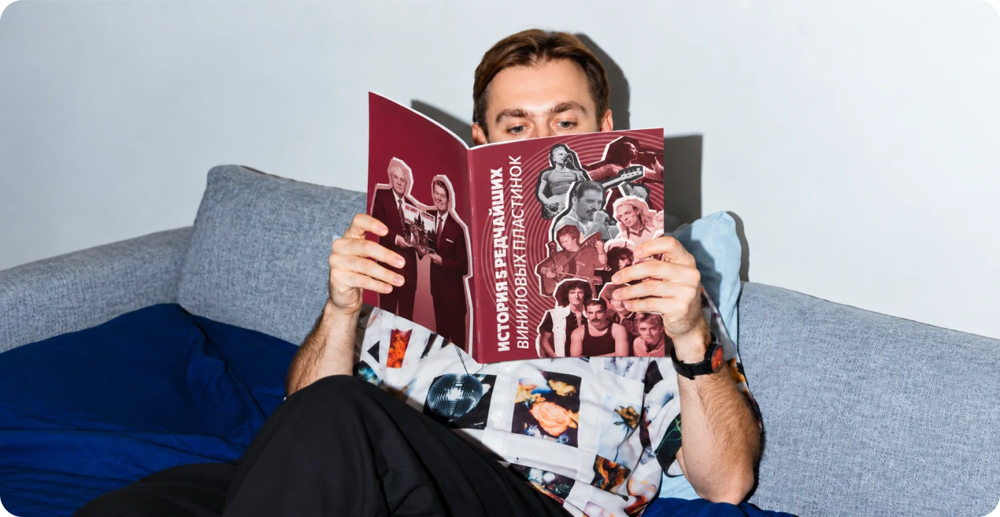
01. Немного о проекте
В московском ЖК «Золотой» есть необычное пространство — секретная комната с проигрывателем и коллекцией редких виниловых пластинок
Для неё решили создать небольшой печатный журнал с историями пяти пластинок из коллекции
Важный момент: это не рекламная брошюра и не каталог с сухими фактами. Журнал должен был стать частью самого пространства — предметом, который хочется взять в руки, полистать, почитать и через истории музыкантов чуть ближе познакомиться с коллекцией
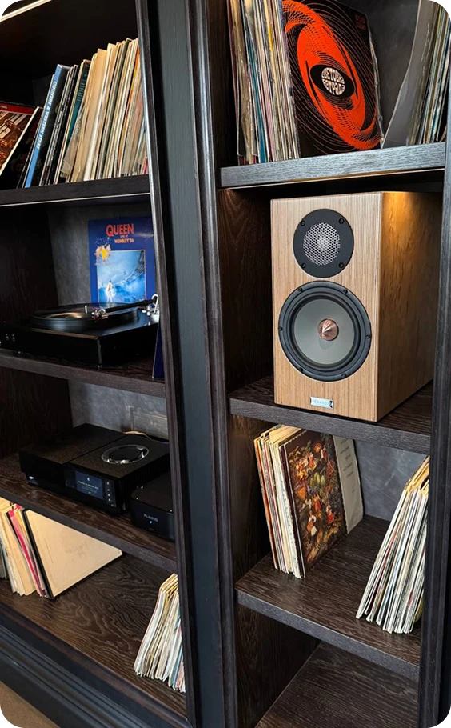
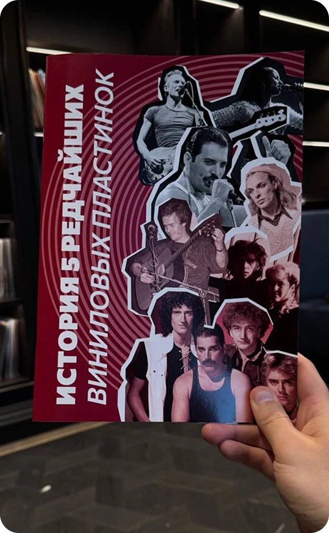
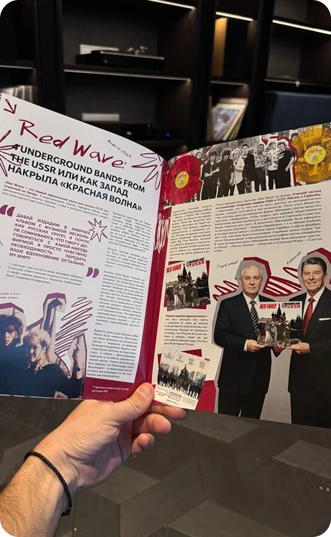
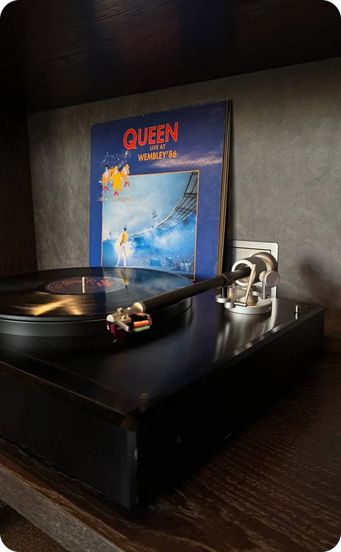
Содержание сборника подготовил Андрей Купрум, главным редактором проекта выступил Слава Милк. А мне предстояло придумать, как всё это будет выглядеть
О проекте
- Формат: А4
- Объём: 18 страниц
- Тираж: ~20 экземпляров
- Срок: 2 дня
- Моя роль: графический и редакционный дизайнер
02. С чего всё начиналось
На старте у меня были тексты, изображения пластинок и логотип жилого комплекса. Готовой визуальной концепции или шаблона для журнала не существовало — всё нужно было придумать с нуля
При этом на проект отводилось всего два дня, включая подготовку финального файла к печати
Мне нужно было разобраться в содержании, распределить материалы по страницам, разработать оформление и собрать все 18 страниц в единое издание
Но была ещё одна задача, не такая очевидная
ЖК «Золотой» — премиальное пространство, и журнал должен был ему соответствовать. При этом мне совершенно не хотелось делать очередной стерильный каталог с аккуратными фотографиями и строгими заголовками
Всё-таки речь шла о музыке — с её историей, характером и эмоциями
Нужно было найти баланс между сдержанностью премиального издания и живой эстетикой музыкальной культуры
За дизайн я отвечала самостоятельно: от визуального поиска и структуры журнала до обложки, разворотов, коллажей и подготовки к печати. Все ключевые решения согласовывала напрямую со Славой Милком
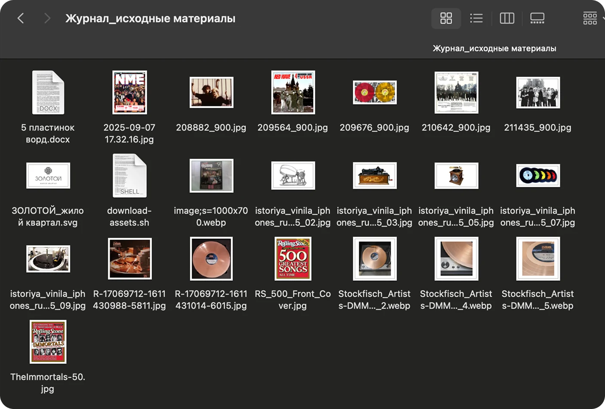
Исходные материалы: тексты, изображения пластинок и логотип ЖК
03. Как я искала визуальный язык
Сначала я определила несколько направлений, в которых мог развиваться дизайн
>> Первое — минималистичный премиальный каталог. Много свободного пространства, аккуратная типографика, сдержанные композиции
>> Второе — музейная подача. Более строгая структура, архивные изображения и акцент на исторической ценности пластинок
>> Третье — коллажная эстетика. Многослойные композиции, крупная типографика, вырезки и графические элементы, вдохновлённые старыми музыкальными журналами и афишами
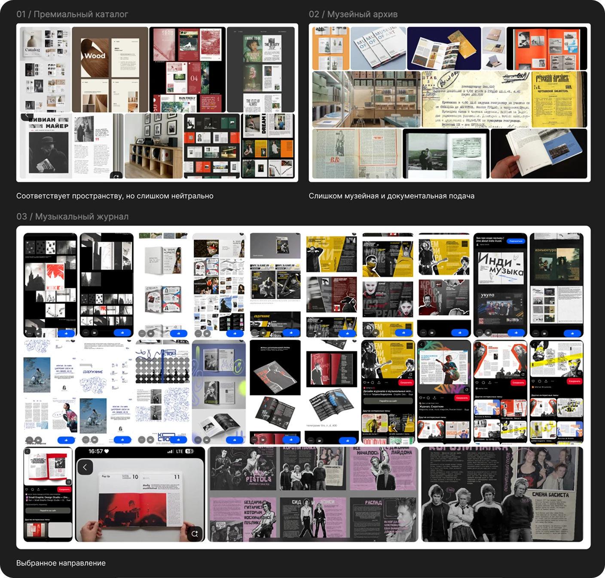
Три направления: премиальный каталог, музейный архив и музыкальный журнал — выбрано последнее
Первое направление хорошо передавало премиальный характер пространства, но выглядело слишком сдержанным для музыкального издания. Второе подчёркивало историческую ценность пластинок, но создавало ощущение музейной экспозиции
Мне хотелось, чтобы журнал не просто рассказывал об истории музыки, а передавал её характер и настроение
Поэтому я остановилась на коллажной эстетике, вдохновлённой музыкальными журналами, афишами и архивными материалами, сохранив при этом аккуратность редакционной структуры
Так появилась основная концепция: пять музыкальных историй, объединённых одним коллажным визуальным языком
04. Как я выстроила структуру журнала
Прежде чем собирать развороты, нужно было понять, как организовать пять разных историй внутри одного журнала
Я разделила содержание на смысловые блоки и выстроила общую последовательность:
Введение → Пять историй пластинок с чередованием информационных, коллажных и цитатных страниц → Финальный блок с авторами и логотипом ЖК
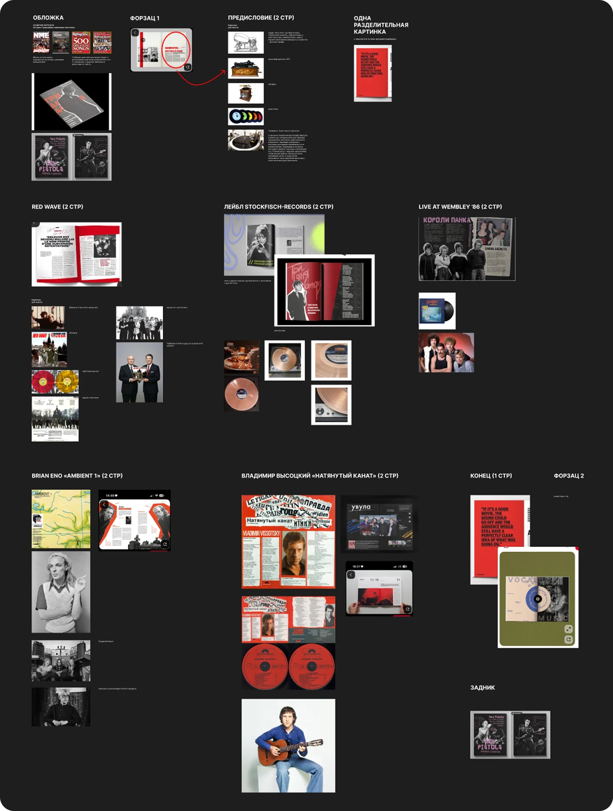
Карта журнала: обложка, форзацы, предисловие и пять историй пластинок
При распределении материалов я ориентировалась не только на объём текста, но и на смысл каждой истории
Мне хотелось, чтобы один разворот раскрывал одну законченную мысль, а сам журнал можно было читать по-разному: последовательно, от начала до конца, или просто открывать на случайной странице
Поэтому вместо одного повторяющегося шаблона я выделила несколько типов страниц:
>> Информационные — спокойные развороты, где главную роль играет текст
>> Коллажные — более насыщенные композиции с фотографиями, пластинками и графикой
>> Цитатные — акцентные страницы с крупной типографикой, которые создают паузы между историями
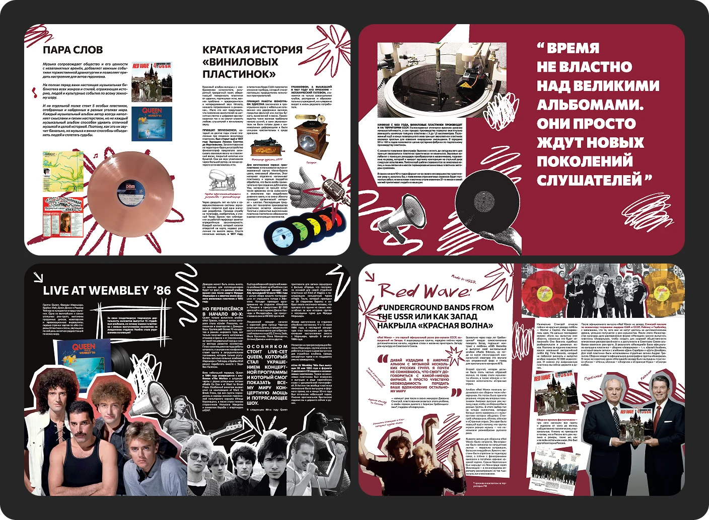
Три типа страниц: информационный, коллажный и цитатный
Это стало основой редакционной системы: разные по характеру страницы объединялись общими принципами, но не повторяли друг друга
05. Одна система — пять разных характеров
Одна из главных сложностей заключалась в том, что истории пластинок заметно отличались друг от друга
Мне не хотелось оформлять их по одному шаблону, просто меняя фотографии и заголовки. Но и превращать журнал в набор никак не связанных страниц было нельзя
Поэтому я разделила визуальную систему на две части
Постоянная основа
- Типографическая иерархия
- Цветовая палитра
- Работа с цитатами
- Коллажные принципы
- Смысловая структура
Гибкость внутри системы
- Масштаб заголовков
- Соотношение цветов
- Расположение цитат
- Количество и композиция изображений
- Смысловая структура
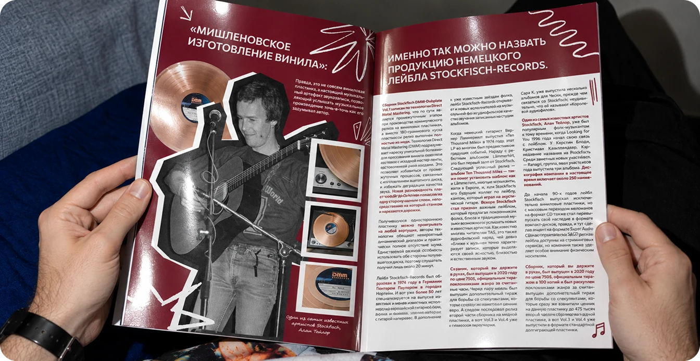
Получилась система с достаточно строгой основой, внутри которой можно было свободно экспериментировать с композицией
Типографика: читаемость и визуальные акценты
Типографика стала одним из главных инструментов оформления журнала
Для объёмных материалов я выбрала спокойную журнальную вёрстку, чтобы истории оставались удобными для чтения
А в заголовках и цитатах позволила себе больше свободы: использовала крупный шрифт, контраст и нестандартное расположение текста
Так типографика не только организует информацию, но и становится частью коллажных композиций, помогая передать характер каждой музыкальной истории
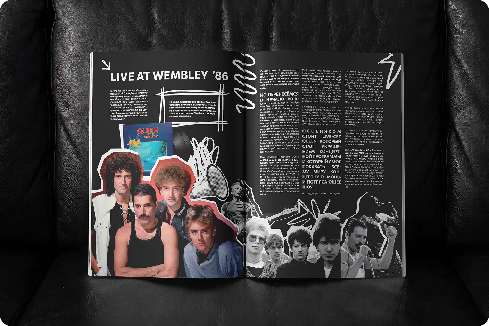
Разворот «Live at Wembley ’86»
Три цвета вместо сложной палитры
Основу журнала составили бордовый, чёрный и белый
Я намеренно ограничила палитру, потому что внутри уже было достаточно разного визуального материала: фотографии музыкантов, изображения пластинок, коллажи и большой объём текста
Дополнительные цвета только усложнили бы композицию
Бордовый стал главным акцентом — выразительным, но при этом достаточно сдержанным для премиального пространства
А чередование светлых и тёмных разворотов помогло управлять визуальным ритмом издания
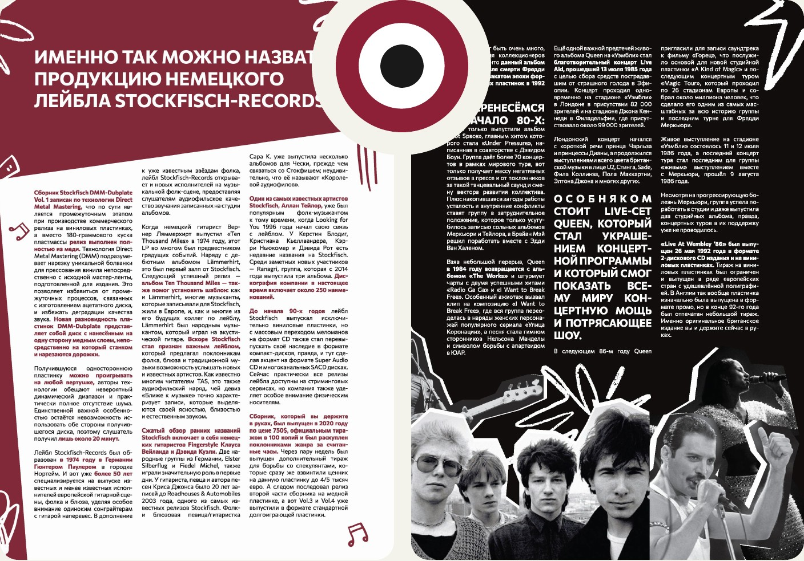
Светлый и тёмный развороты рядом
Как разрозненные изображения превратились в коллажи
Коллаж стал основой визуального языка журнала
Исходные изображения сильно различались по характеру и качеству. Вместо того чтобы пытаться привести все фотографии к одному стилю обработки, я решила использовать эту разницу как часть концепции
Фотографии артистов, изображения пластинок, рукописные элементы и графические пометки стали материалом для многослойных композиций
Они накладываются друг на друга, пересекаются с заголовками и взаимодействуют с типографикой, создавая ощущение вручную собранных музыкальных историй
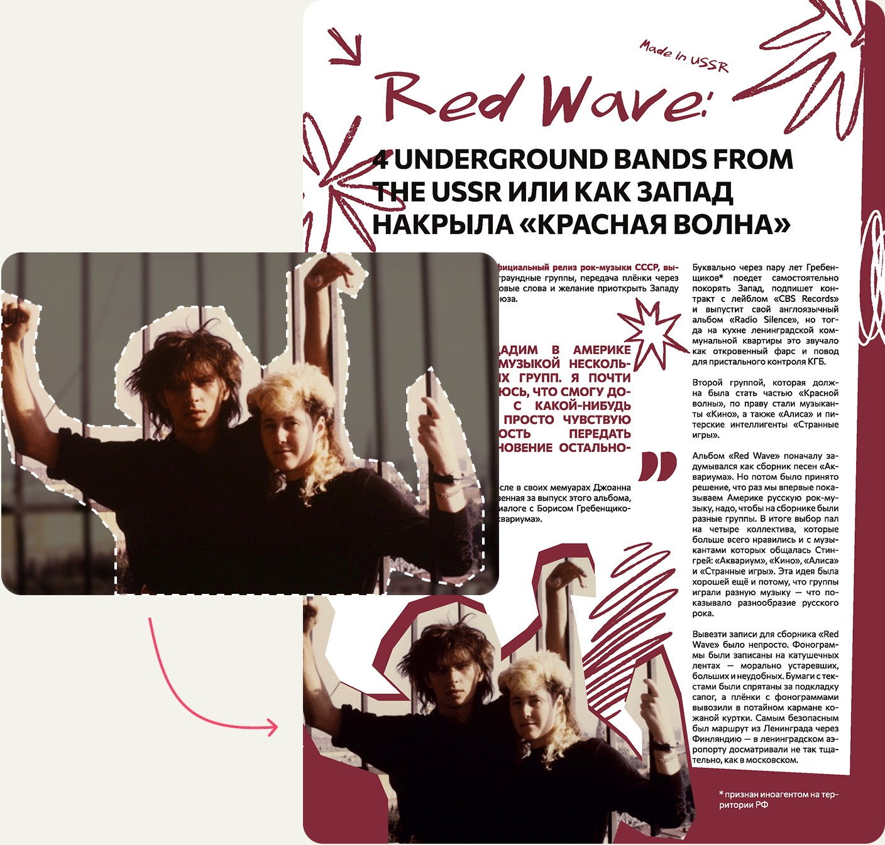
Как фотография артиста превращается в вырезку и ложится на разворот «Red Wave»
Цитаты, которые помогают задать ритм
Мне не хотелось, чтобы журнал состоял только из плотных текстовых разворотов
Поэтому я придумала несколько коротких фраз о музыке и вынесла их на отдельные акцентные страницы, сделав полноценными композиционными элементами
Они работают как небольшие паузы между большими историями: помогают переключить внимание, меняют темп просмотра и добавляют изданию эмоциональности
Особенно это важно для журнала, который будут не только читать последовательно, но и свободно листать
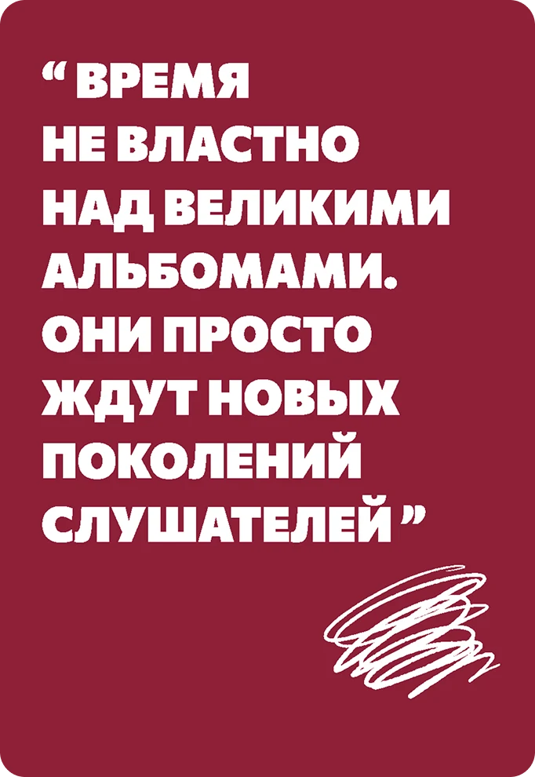
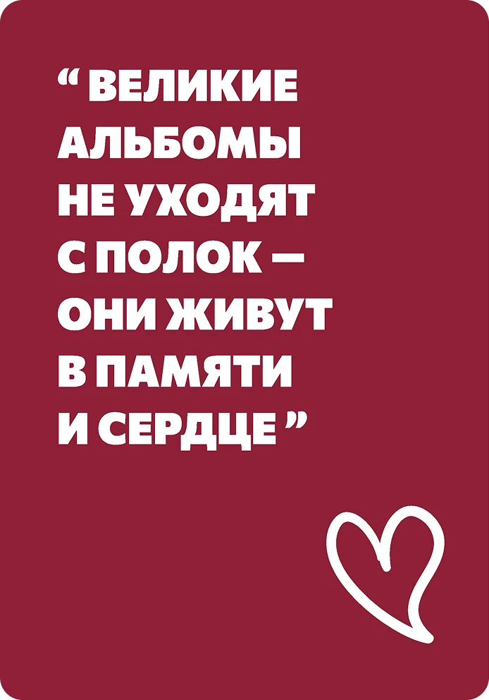
06. Как собрать всё это за два дня?
Из-за короткого срока привычный процесс с длительным поиском концепций и несколькими полноценными вариантами здесь не подходил
Мне нужно было быстро определиться с визуальным направлением и сразу проверить, насколько хорошо оно работает с реальным содержанием
После анализа материалов и поиска референсов я выбрала коллажный подход и перешла к первому ключевому развороту
Именно на нём начала формироваться будущая система: типографика, работа с цветом, сочетание изображений и общий принцип построения коллажей
Затем я перенесла эти правила на остальные страницы, параллельно обрабатывая изображения, распределяя тексты, придумывая акцентные фразы и дорабатывая отдельные элементы
-
анализ, референсы
день 1 / утро
- исходные материалы
- визуальный поиск
- выбор направления
-
структура
день 1 / день
- логика издания
- распределение контента
- типы страниц
-
первый разворот
день 1 / вечер
- проверка концепции
- типографика
- коллажный принцип
-
сборка системы
день 2 / утро
- остальные развороты
- обработка изображений
- цитатные страницы
- ритм журнала
-
финализация
день 2 / день
- подготовка pdf
- финальные правки
- согласование
- печать
Макет изначально собирался с учётом дальнейшего производства, поэтому не пришлось отдельно собирать оформление под печатный формат
В итоге согласование прошло практически без изменений: основная правка касалась названия журнала
07. Что получилось
За два дня я разработала и подготовила к печати 18-страничный журнал с историями пяти редких виниловых пластинок
Было напечатано около 20 экземпляров, и издание стало частью секретной комнаты ЖК «Золотой»
Главное в этом проекте для меня — не столько скорость, сколько возможность за очень короткое время придумать и реализовать цельную редакционную систему
Вместо набора разрозненных текстов и изображений получилось самостоятельное печатное издание, в котором каждая музыкальная история получила собственный характер
Коллажная эстетика позволила объединить разные материалы, а общая типографика, палитра, авторские фразы и структура — сохранить целостность и визуальный ритм всех 18 страниц
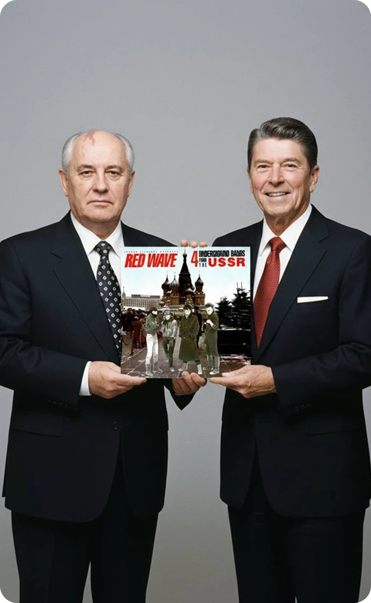